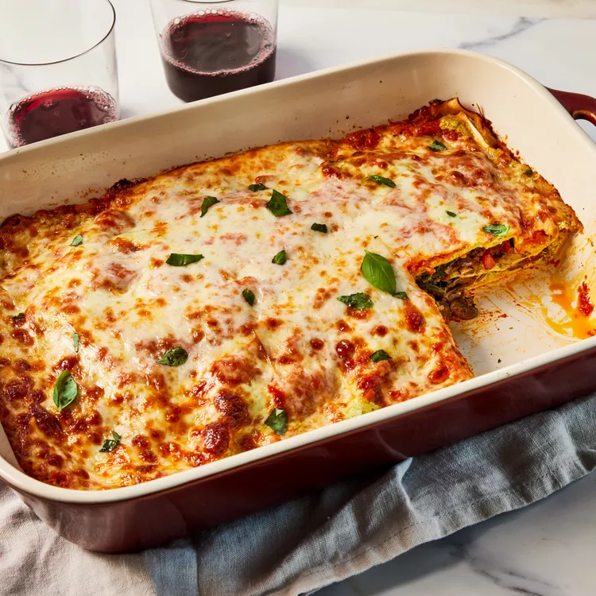

Nonna's Lasagna

Description
This lasagna isn't just a recipe, it's a memory. The scent of simmering
tomatoes and oregano will transport you right back to Nonna's kitchen,
where laughter filled the air alongside the rich aroma of slow-cooked
ragu. Each layer, from the perfectly al dente pasta to the creamy
béchamel, is infused with the love she poured into every dish. This isn't
just lasagna; it's a taste of home, a whisper of her loving presence in
every bite.
Ingredients
- Pasta
- Ground beef or a combination of ground meats (e.g., pork, veal)
- Onions
- Garlic
- Celery
- Carrots
- Tomato paste or canned crushed tomatoes
- Beef broth
- Olive oil
- Salt and pepper
- Sauce
- Freshly grated Parmesan cheese
- Grated mozzarella cheese
- Cooked, chopped fresh parsley or basil (optional)
- Oregano
- Bay leaves
- Salt and pepper
- Béchamel sauce
- Butter
- All-purpose flour
- Milk
- Grated Parmesan cheese
- Salt and pepper
- Cheese
- Ricotta cheese
- Mozzarella cheese
- Parmesan cheese
Steps
- Preheat the oven: Preheat your oven to 375°F (190°C).
-
Cook the pasta: Bring a large pot of salted water to a boil and cook the
lasagna noodles according to package instructions until they are al
dente. Reserve 1 cup of pasta water before draining.
-
Prepare the sauce: In a large saucepan, heat the olive oil over medium
heat. Add the ground beef or combination of meats, breaking it up with a
spoon as it cooks. Once browned, add the chopped onions, garlic, celery,
and tomato paste. Cook until the vegetables are softened, then stir in
the canned crushed tomatoes, beef broth, dried oregano, bay leaves,
salt, and pepper. Simmer the sauce for 20-30 minutes, stirring
occasionally.
-
Making the béchamel sauce: In a medium saucepan, melt the butter over
medium heat. Whisk in the all-purpose flour to make a roux, cooking for
1-2 minutes. Slowly pour in the milk, whisking constantly to prevent
lumps. Bring the mixture to a simmer and cook until it thickens,
stirring occasionally. Remove from heat and stir in the grated Parmesan
cheese.
-
Assembling the lasagna: Spread a layer of sauce at the bottom of a
9x13-inch baking dish. Arrange 4 lasagna noodles on top of the sauce.
-
Laying with ricotta mixture: Spread half of the ricotta cheese over the
noodles, followed by half of the grated mozzarella and Parmesan cheese.
Repeat this process: layering the remaining noodles, then the remaining
ricotta cheese, and finally the remaining mozzarella and Parmesan
cheese.
-
Topping with béchamel sauce and cheese: Pour the béchamel sauce over the
top layer of cheese. Sprinkle additional Parmesan cheese over the sauce
for extra flavor.
-
Covering and baking: Cover the dish with aluminum foil and bake for 30
minutes. Remove the foil and continue baking for an additional 10-15
minutes, or until the cheese is melted and bubbly.
-
Letting it rest: Remove the lasagna from the oven and let it rest for
10-15 minutes before slicing and serving.
Tips and Variations:
To add extra flavor, sprinkle chopped fresh parsley or basil over the top
layer of cheese before baking.
Consider adding other ingredients to the sauce, such as diced bell peppers
or mushrooms, for added depth of flavor.
For a vegetarian version, substitute the ground beef with sautéed spinach
and mushrooms.
Buon appetito!